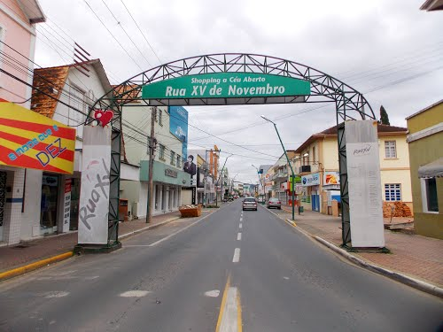

Passear na Rua XV!
É uma rua da cidade de Rio do Sul onde existem muitas opções de alimentação.
Obtenha mais informações no twiter da Rua XV Twitter?
É uma rua da cidade de Rio do Sul onde existem muitas opções de alimentação.
Obtenha mais informações no twiter da Rua XV Twitter?

Construida no ano de 2000 a.c na cidade de Rio do Sul. Sua construção durtou 10 anos.
Veja informações completas sobre a matriz nesse site Guia da Cidade de Rio do Sul.
Criando em 2029, e destinado a divesão e prática de esportes.
Veja no mapa como chegar ao parque.